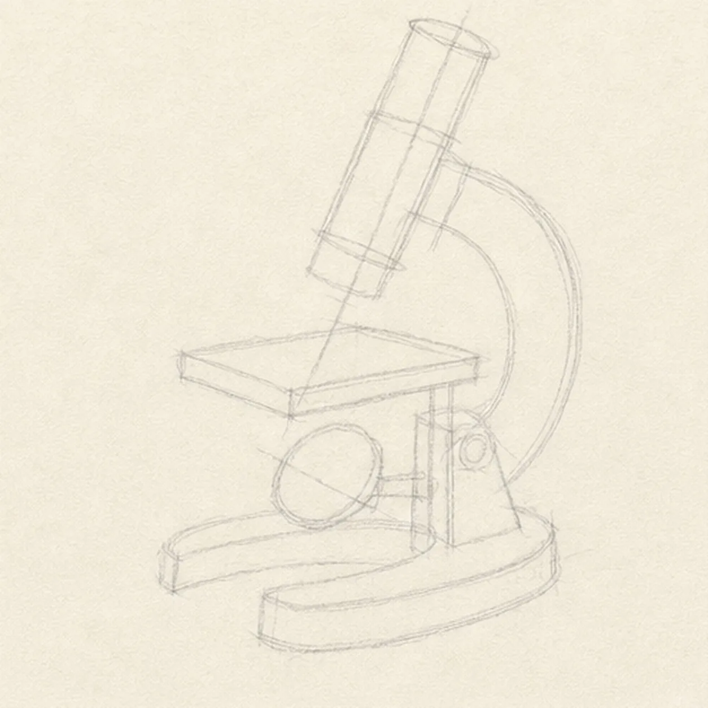
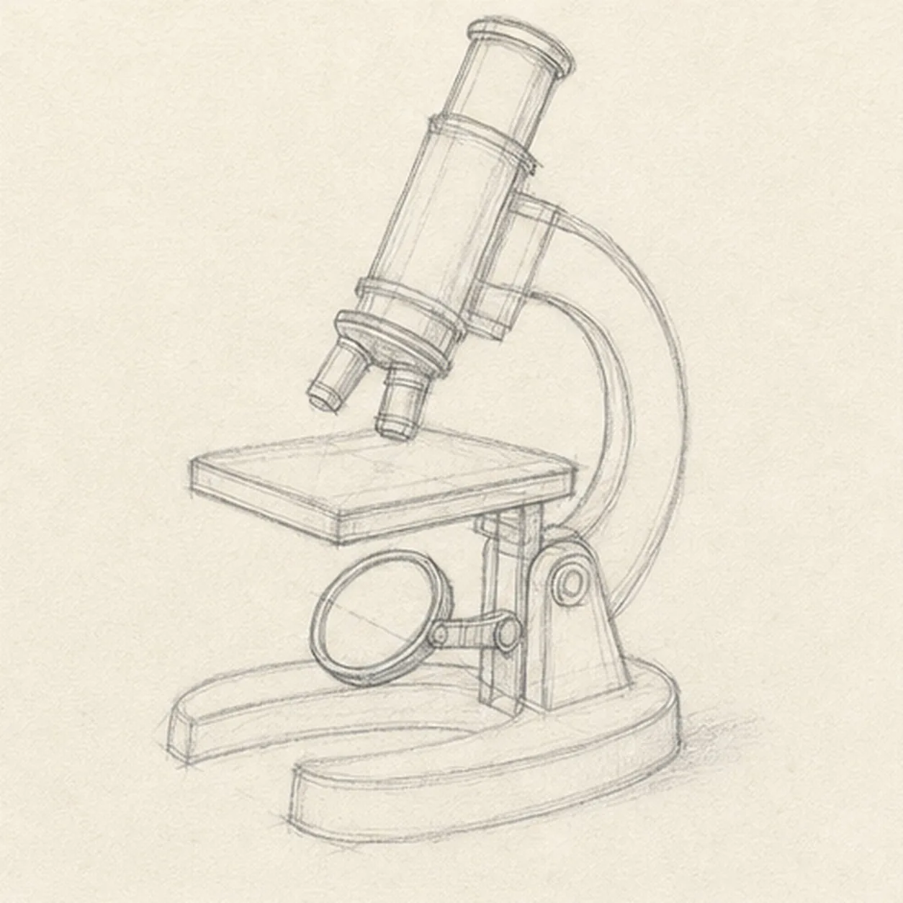
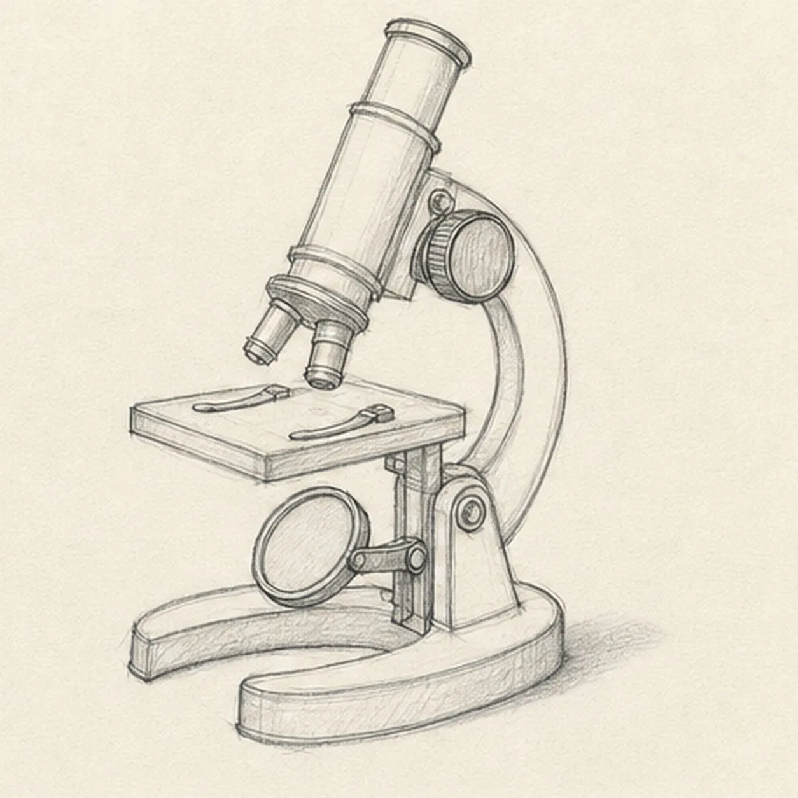
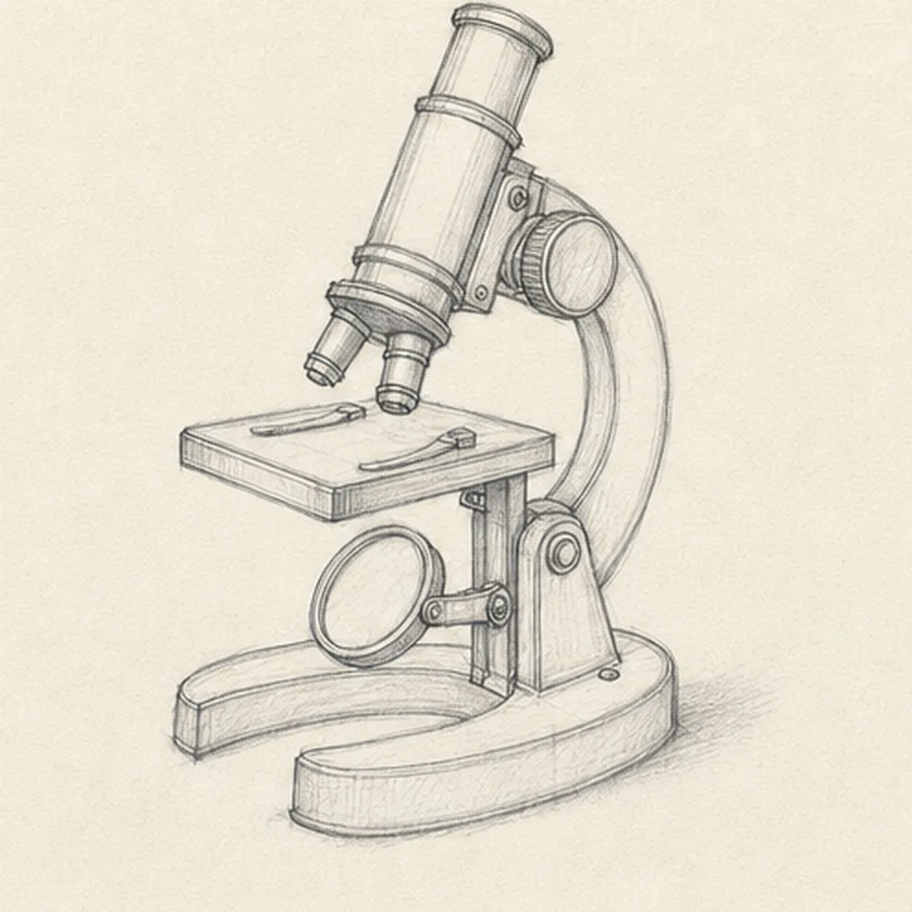
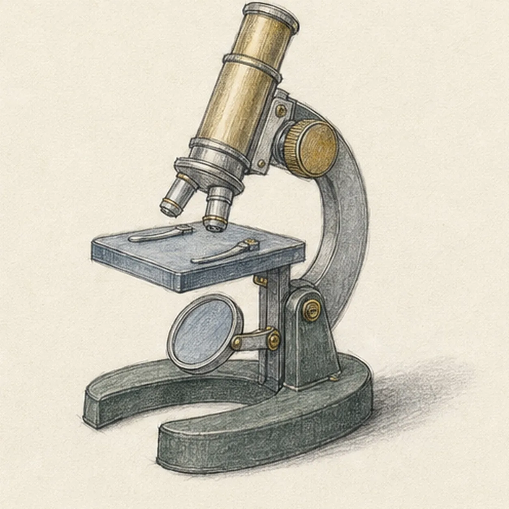

From the archive
Let's draw a vintage microscope
Treat this as one small practice round: build the subject lightly, notice the shapes, then darken only the lines that help the finished sketch.
-
01

Set the microscope's lean
Draw a pale tilted optical axis and barrel envelope, then place the stage rectangle, curved arm route, mirror circle, upright support, and horseshoe base footprint.
Sketch tip: Ghost the tube axis and the stage's two long edges before touching down. Compare their angles rather than making the stage perfectly horizontal; the slight tilt carries the whole three-quarter view.
-
02

Build the instrument silhouette
Wrap the guides with one eyepiece, the angled barrel, revolving nosepiece, exactly two objective lenses, stage, curved arm, mirror support, hinge upright, and broad horseshoe base.
Sketch tip: Rotate the page for the tube and arm curves, then break hidden edges where the stage crosses the support. Count two objectives before darkening either collar.
-
03

Attach the working hardware
Add one large ribbed focus knob, two stage clips, the round mirror rim, pivot joints, and the inner opening of the horseshoe base.
Sketch tip: Use the negative space inside the horseshoe to check the base perspective. Keep the mirror slightly off-round so it follows the established tilt instead of facing the viewer flat.
-
04

Separate the metal parts
Add barrel bands, collars on both objective lenses, a few attachment screws, stage thickness, and broad material seam lines.
Sketch tip: Vary pencil pressure by material: firmer on the dark arm and base seams, lighter on the brass tube. A few clear screws are more convincing than a field of tiny hardware.
-
05

Show brass, steel, and weight
Shade the existing structure with graphite, add muted brass to the tube and knobs, blue gray to the stage and mirror, charcoal green to the base, paper highlights, and one broken cast shadow.
Sketch tip: Pull color along each metal form and leave long paper highlights on the tube. Build the floor shadow outward from the base contact points so the instrument feels heavy without a smooth digital gradient.
-
06
![Handmade graphite and restrained colored-pencil sketch of one left-facing three-quarter vintage microscope with a long muted-brass optical barrel and eyepiece, a revolving nosepiece with exactly two objective lenses, one blue-gray rectangular stage with two curved clips, one large ribbed brass focus knob, a dark curved support arm, one round tilting blue-gray mirror, an upright hinge support, a broad charcoal-green horseshoe base, small screws and bands, paper highlights, and one broken graphite cast shadow](../assets/vintage-microscope-finished-v1.webp)
Focus the vintage finish
Strengthen the keeper contours and clarify the established optical tube, two objectives, stage, arm, focus knob, mirror, hinge, horseshoe base, hardware, restrained colors, highlights, and shadow.
Sketch tip: Trace the optical path from eyepiece to both objectives, check that the mirror still sits below the stage, then stop before every surface becomes equally dark. Your hardware and colors can vary while the structure stays the same.
![Handmade graphite and restrained colored-pencil sketch of one generic face-free school bus in a front-left three-quarter view with one broad dark windshield, one folding entry-door window, exactly four receding side passenger windows, exactly two visible wheels, two headlights, exactly three muted-red roof marker lamps, one side mirror, two dark horizontal safety bands, one simple front grille and bumper, several small panel seams, tactile directional hatching, school-bus-yellow body color, cool-gray glass and wheel values, open paper highlights, and one broken graphite ground shadow](../assets/school-bus-three-quarter-view-finished-v1.webp)

![Handmade graphite and restrained colored-pencil sketch of one warm-ginger kitten seated in a three-quarter pose facing page left with exactly two triangular ears, two wide eyes focused on one dusty-teal yarn ball, one front paw raised over one loose strand, one front paw planted, two folded hind haunches, one curled tail with three broad tabby bands and a darker tip, three forehead stripes, sparse whiskers, tactile directional fur hatching, rose ear interiors and nose, open paper highlights, and one broken warm-gray ground shadow](../assets/kitten-batting-a-ball-of-yarn-finished-v1.webp)